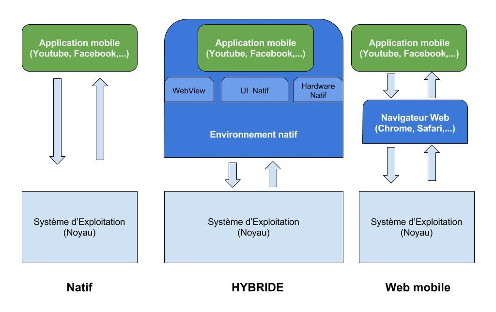
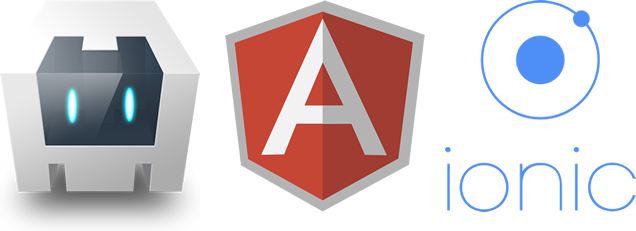
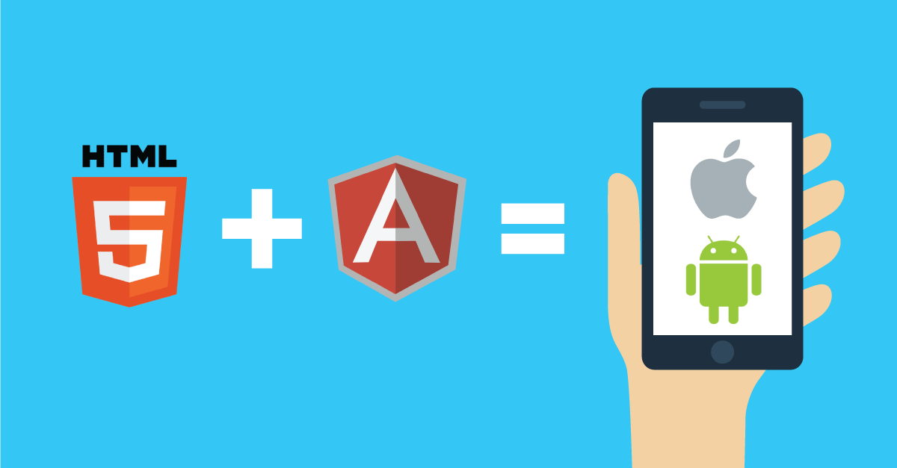
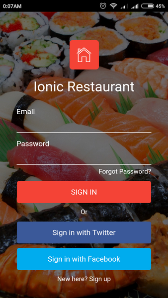
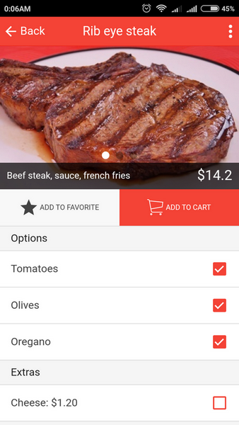

Chap 1 - Une brêve histoire du mobile
Il était une fois...
Il y a longtemps, fort fort longtemps, en année technologique bien sûr, le natif était roi et les développeurs d'applications mobiles ses sujets. Les temps de développement étaient en moyenne estimés en mois, la rémunération était attractive et les meilleurs développeurs étaient des demi-dieux. Nul ou presque ne pouvait prétendre proposer une première version, la tant convoitée V1, en moins d’une journée sans passer pour un illuminé, pire un hérétique.
Je vous l'ai dit, c’était il y a fort longtemps.
Vous vouliez afficher du contenu issu d’une API (rien à voir avec le dieu égyptien) depuis votre BlackBerry Bold 9000 ? ou une petite image toute mignonne et quelques lignes de texte sur un HTC Dream tout neuf ? Pas de soucis, pour l'un comme pour l'autre, il vous fallait juste maîtriser le Java.
Si vous aviez le malheur de vouloir visualiser vos articles de blog et ceux de vos pages préférés depuis votre iPhone 3G en passant par un flux RSS créés par vos soins, il vous fallait absolument connaître l’Objective-C. Sinon, à moins d'avoir un gros budget et embaucher un développeur mobile, vous seriez contraint de passer votre chemin et plus vite que ça !
Avec le temps, de nombreux projets ont vu le jour pour permettre à tout le monde de se lancer dans l'univers impoyable du développement d'applications mobiles avec des technologies classiques du web (html, css, javascript). Beaucoup sont morts-nés, d'autres ont dominé un temps avant de s'éffrondrer. D'autres encore, d'abord tapis dans l'ombre, ont su se démarquer, se réinventer, s'adapter jusqu'à atteindre leur plein potentiel.
Une méthode pour les gouverner tous
Il existe différentes façon de développer un produit à destination des mobinautes : le web mobile, le natif et l'hybride.
Applications web mobiles
Une application web mobile est une version allégée d'un site internet, optimisée pour les écrans de petites tailles (smartphone, tablette, TV connectée,...). On parle la plupart du temps de site responsive, car il s'adapte aux caractériques de l'écran du navigateur web.
Applications natives
Une application mobile est dite native, si le développement effectué pour la créer (et donc le langage de programmation) est spécifique à la plateforme cible.
| Plateforme cible | Langage de Programmation |
|---|---|
| Android (Google) | Java, Kotlin |
| iOS (Apple) | Objective-C, Swift |
| Windows Phone (Microsoft) | C-Sharp (C#) |
| ...etc |
Applications hybrides
Vous vous rappelez du seigneur des anneaux ? Oui ? Et bien les technologies dites "hybrides" sont au mobile, ce que l'anneau de Sauron est à l'univers imaginée par Tolkien1.
Une application est dite hybride si elle est développée pour les smartphones avec les outils classiques du web.
Les applications mobiles hybrides permettent aux développeurs de réutiliser leurs compétences existantes en développement web. Car, c'est bien connu, les développeurs n'aiment pas être bloqués par des contraintes (maitriser Java, avoir un Mac,...) imposées par des plates-formes propriétaires.
Le développement d'applications mobiles hybrides est aujoud'hui la méthode la plus attrayante pour la rentabilité d'une organisation. Pourquoi embaucher un développeur pour chaque plate-forme lorsque vous pouvez embaucher un développeur et les cibler toutes grâce à des technologies aussi connues que HTML, CSS et JavaScript?.
Les smartphones Android, iOS ou autre, embarquent dans leur noyau une technologie appellée WebView permettant d'executer du code web au sein d'un environnement natif. Ainsi, il est possible de lancer la caméra de votre téléphone (natif), via une simple fonction Javascript (web). Ce qui donnerait ceci par exemple :
function capturePhoto() {
// Prend une photo en utilisant la fonction camera du téléphone
navigator.camera.getPicture(onPhotoDataSuccess, onFail, {
quality: 50,
destinationType: destinationType.DATA_URL
});
}
Pas de panique, ce code écrit en JavaScript n'aura bientôt plus beaucoup de secrets pour vous.
Pourquoi et quand faire le choix d'un développement Hybride
Une application hybride est avant tout une application native. Elle est téléchargée à partir d'un app store ou d'une tout autre place de marché. Elle a les mêmes fonctionnalités natives et à peu près les mêmes performances que toute application construite avec un SDK natif.
Une application hybride s'exécute dans un genre de navigateur en plein écran, appelé WebView, invisible pour l'utilisateur. Grâce à des plugins natifs personnalisables, elle peut accéder aux fonctionnalités natives de périphériques mobiles spécifiques (caméra, contacts, agenda,...), sans que le code principal ne soit lié à cet appareil.
Cela signifie que les applications hybrides peuvent fonctionner sur n'importe quelle plate-forme ou périphérique, tous à partir d'une base de code unique, tout en offrant un aspect et une convivialité natifs.
Le schema en couche ci-dessous permet une meilleure comparaison de ce qu'une application hybride est vis-à-vis du natif et du web mobile :
Avant de vous engager dans un développement mobile, il est important de bien évaluer les avantages et les inconvénients de chacunes de ces méthodes. Voici quelques questions à se poser pour vous aider à vous lancer :
- Quelles plates-formes mobiles souhaitez-vous cibler ? Android ? iOS ? Windows Phone ?
- Voulez-vous distribuer votre application via un app Store ?
- Cherchez-vous à utiliser une ou plusieurs fonctionnalités clés de l'appareil mobile ?
- Quelles sont vos capacités techniques et/ou celle de votre équipe de développement ?
N'hésitez pas à noter ces questions, à y répondre, puis à les poser aux personnes pour ou avec qui vous prévoyez de travailler.
Voilà plus en détail ce que ces différentes questions peuvent impliquer.
Quelles plates-formes mobiles souhaitez-vous cibler ?
Si vous souhaitez cibler plus d'une plate-forme mobile, vous avez alors plusieurs choix possibles. Cela va de soi.
Et de toute évidence, le web mobile offre la solution la plus attrayante, surtout si vous possédez déjà une version web de ce que vous souhaitez développer pour les mobiles. Dans ce cas, un simple développement d'une version responsive de votre site peut être suffisant.
Mais, un développement hybride peut être aussi une excellente alternative.
Si ce que vous souhaitez proposer ne requiert pas d'avoir de très grosses performances logiciels, alors le natif n'est surement pas une bonne idée. Cependant, si vous ne voyez aucun inconvénient à recruter 3 développeurs différents ou à exploiter celui que vous avez déjà (si ce n'est vous), le priver de vacances jusqu'à ce que mort s'en suive, alors oui partez sur du natif. Bon j'exagère un peu, mais c'est à peu près ça.
Préparez-vous de toute façon, si votre choix se porte sur le natif, à parler couramment l'Objective-C ou le Swift pour iOS, Java ou Kotlin pour Android, et C-Sharp (C #) pour Windows Phone, pour ne citer que ces trois plateformes.
Voulez-vous distribuer votre application via un app Store ?
Si vous souhaitez distribuer votre application via une boutique d'applications mobiles, vous devrez alors créer soit une application hybride, soit une native. Vous aurez dans tous les cas besoin d'un site internet qui servira de plateforme à vos utilisateurs au cas où ils rencontreraient des problèmes avec votre application mobile.
Vous cherchez à utiliser des fonctionnalités clés de l'appareil mobile?
Grâce aux PWA (Progressive Web Apps), on peut faire énormément de choses depuis un site mobile et utiliser des fonctionnalités qui dans le passé n'étaient accessible qu'en développement natif ou hybride. Je consacre un chapitre entier à cette technologie à la fin de ce livre.
Mais si les fonctions que vous ciblez dépassent le cadre du PWA, là aussi pas le choix, vous devrez passer par l'Hybride ou le natif. Et si vous souhaitez être irréprochable niveau interface utilisateur et performance, alors le natif devra être votre premier choix.
Quelles sont vos capacités techniques et/ou celle de votre équipe de développement ?
Grande question encore et loin d'être la moins importante. Si vous avez une grosse équipe de développement, vous êtes alors à l'abri de nombreux soucis. Vous aurez le choix d'utiliser l'une ou autre des trois méthodes précédentes. Vous êtes riche et donc vous le valez bien.
Vous aurez besoin, pour créer une application native, de développeurs expérimentés, maîtrisant à la fois les SDK (outils de développement) et les langages de programmation de chaque plate-forme que vous souhaitez cibler.
Mais si vous souhaitez ne pas mettre profit autant de compétences techniques pour un miniscule projet qui ne vous rapportera pas plus de 1% de votre chiffre d'affaires, alors cela vaudra peut être la peine de réfléchir à l'option Hybride qui pourrait vous faire économiser énormément de temps et d'argent.
Ça tombe bien, Ionic permet la création d'applications hybrides et ce livre est là pour vous aider à décoller de la meilleure des façons.
Pourquoi choisir Ionic ?
Open Source et 100% gratuit
Un avantage non considérable, surtout si l'on souhaite customiser un peu son travail, l'adapter à son contexte professionnel,...Gratuit, mais pas bradé pour autant. En effet, l'inconvénient d'un outil Open Source à parfois été son absence d'évolution et d'adaptation aux défis technologiques. Ce n'est pas le cas de Ionic, qui est par exemple passé d'une version 1 déjà révolutionnaire, à une version 3 extrêmement riche. Au moment de la rédaction de ce livre, une version 4 s'apprete à être lancé publiquement.
Une large communauté
Qui n'a jamais connu la frustration de ne pas recevoir de réponse à sa question sur un forum destiné à vous accompagner dans l'utilisation de votre logiciel préféré ? Avec Ionic, il y a quasiment peu de chance que cela vous arrive. En plus d'une documentation déjà tres riche et simple à prendre en main, le Framework fèdère une très large communauté de développeurs enthousiaste près à vous aider en cas de pepin.
Rien que sur Stackoverflow en ce moment, le tag "ionic framework" est associé à plus de 31700 questions, c'est quasiment autant de réponses données sur ce site d'entraide.
Fondations solides
Ionic c'est d'abord Apache Cordova et ses nombreux plugins natifs, Angular de Google, NodeJS et bien d'autres technologies Open Source qui ont fait leur preuve depuis des années et ne cessent de croître à vitesse grand V.

Coder une fois, déployer partout
Et oui, c'est surement l'un des plus gros avantages de Ionic : la possibilité de développer votre application une fois, et la déployer sur plusieurs terminaux mobiles.

Alors que la plupart des outils de développement d'applications mobiles hybrides sont difficiles d'accès, parfois peu ou mal documentés, Ionic propose une architecture beaucoup plus simple utiliser et une documentation claire, concise.
Des composants logiciels élégants
Le framework proposent de nombreux composants et templates qui vous faciliteront énormément la vie. Pas besoin d'être un expert UX pour commencer à créer des applications élégante et ergonomiques : quelques clics et quelques lignes de codes suffisent.

Tests et debogage simples
Tester une application mobile n'aura jamais été aussi simple. Ionic vous laisse le choix de tester votre application mobile soit directement depuis votre navigateur préféré, depuis un emulateur, votre téléphone connecté en USB ou alors via les applications Ionic App Dev et Ionic View (qui vous permet en autre de faire tester votre application à distance sans passer par un app store).
Un ecosystème riche
Une autre force de Ionic est très certainement son large panel de produits à la disposition des développeurs. On peut citer par exemple :
- Les outils de déboggages : Ionic view et Ionic Dev app
- Ionic Cloud : pour la gestion de son code, le build, la publication sur les app stores et le monitoring (bug, logs, statistiques,...)
- Ionic creator : pour créer une application sans saisir une seule ligne de code. Pratique quand on débute.
- Ionic Market : pour trouver des templates, des kits, des plugins, gratuits et prêts à l'emploie. Pour mettre à la vente vos propres réalisations ou pour tout simplement trouver l'inspirations
1. John Ronald Reuel Tolkien, plus connu sous la forme J. R. R. Tolkien, est un écrivain, poète, philologue, essayiste et professeur d’université anglais. Il est principalement connu pour ses romans Le Hobbit et Le Seigneur des anneaux. (Sources : wikipédia). ↩